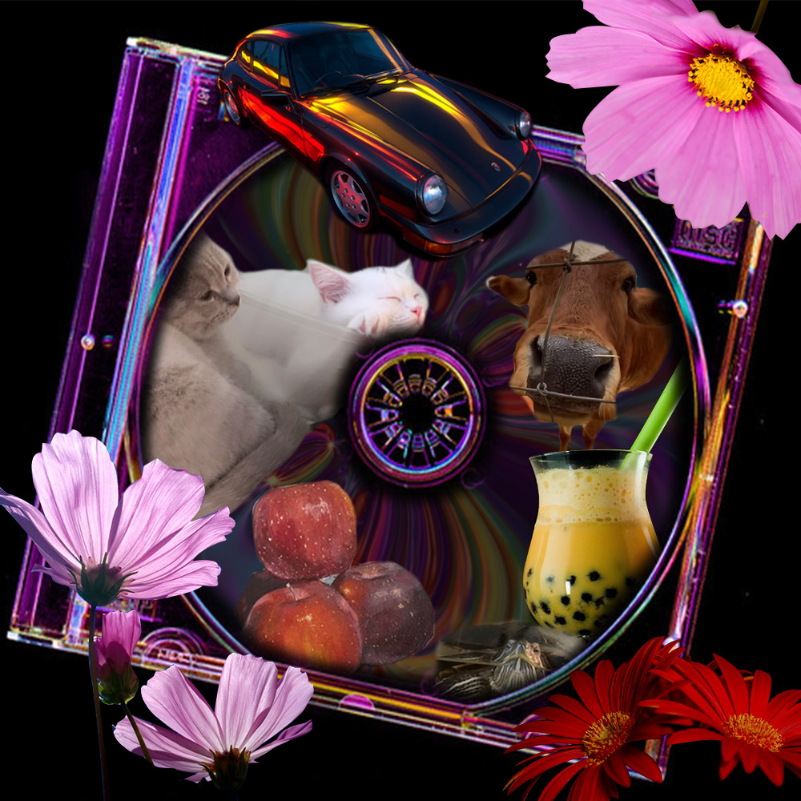
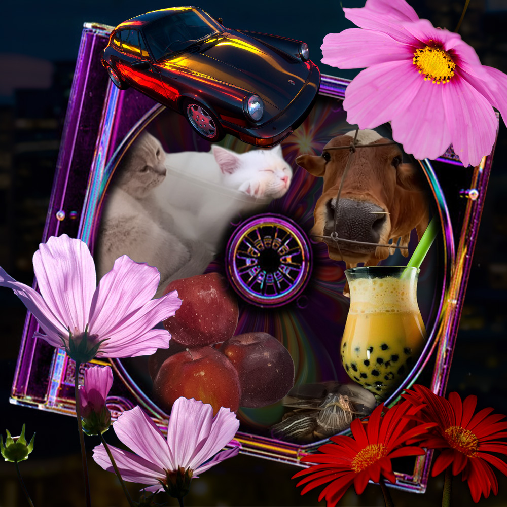
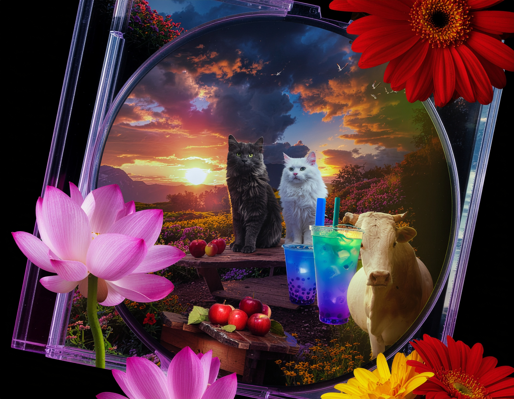

Images

Oldschool

AI Assisted

Generative AI
I chose these images because they represent different parts of my personality and interests, including my love for flowers and cats, my dream of owning a Porsche, and my daily hobbies. I combined ten photos total, including my own and others found online, and focused on matching colors to create a more unified collage inspired by designs I collect on Pinterest. In Photoshop, I used tools like the Pen Tool, Eraser Tool, and masking to build the composition, while the AI version used tools like Select Subject, Remove Background, Generative Fill, and Harmonize to speed up the process and enhance colors. The hardest part was using the Pen Tool because it took multiple tries to get accurate selections. Overall, the AI version was faster and polished, but Photoshop gave me more control and a stronger personal connection to the final design.